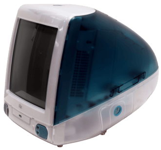
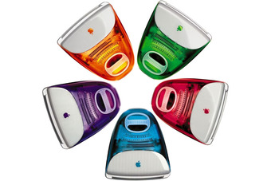

Apple 50 | iMac
Augusztus 15, 1998. Az Apple kiadta azt a számítógépet, ami a világot fel fogja készíteni az internetes korszakra, az iMac G3-at. Ezt a számítógépet sokan még mai napig az egyik legszebb számítógépnek tartják a félig átlátszó, színes műanyag borítása miatt.

Egy kép az iMac G3-ról. Kép: David Fuchs / Wikimedia Commons. Licensz: CC BY-SA 4.0.
Az iMac G3 az Apple egyik legsikeresebb terméke, több mint 6 Millió darabot adtak el. Ez, persze nem oktalan. Az iMac G3 egy nagyon jó számítógép volt, egy nagyon felhasználóbarát felülettel. Legfőképpen iskolák, vagy egyéb oktatási intézmények vásárolták fel ezeket a számítógépeket.
Legnagyobb újítása a design területén volt. Nem csak egy új, akrilikus műanyagra váltottak, hanem teljesen újragondolták, hogy milyen legyen a személyi számítógép az akkori bézs téglalapból.

Egy kép az összes elérhető iMac G3 színről. Kép: Apple Inc. Licensz: Fair use, oktatási célokra felhasznált kép.
Az iMac G3 nélkül biztosan teljesen más lenne a személyi számítógépek kinézete. Az iMac G3 segített az Apple-nek visszatérni a számítógépgyártók trónjára. De, az Apple akkor már egy másik termék kategóriát szemezett. A hordozható zenelejátszókat.
Következő Fejezet →